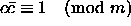
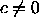

An important new type of PRNG that, as yet, has not found any widely
distributed implementation is the Inversive Congruential
Generator (ICG). This generator comes in two versions, the recursive
ICG [30, 31]
and the explicit ICG [32]
In both the above equations denotes the multiplicative inverse
modulo m in the sense that  when
, and .
An advantage of ICGs over LCGs are that tuples made from ICGs do not fall in hyper-planes [33, 34]. Unfortunately the cost of doing modular inversion is considerable: it is times the cost of multiplication.